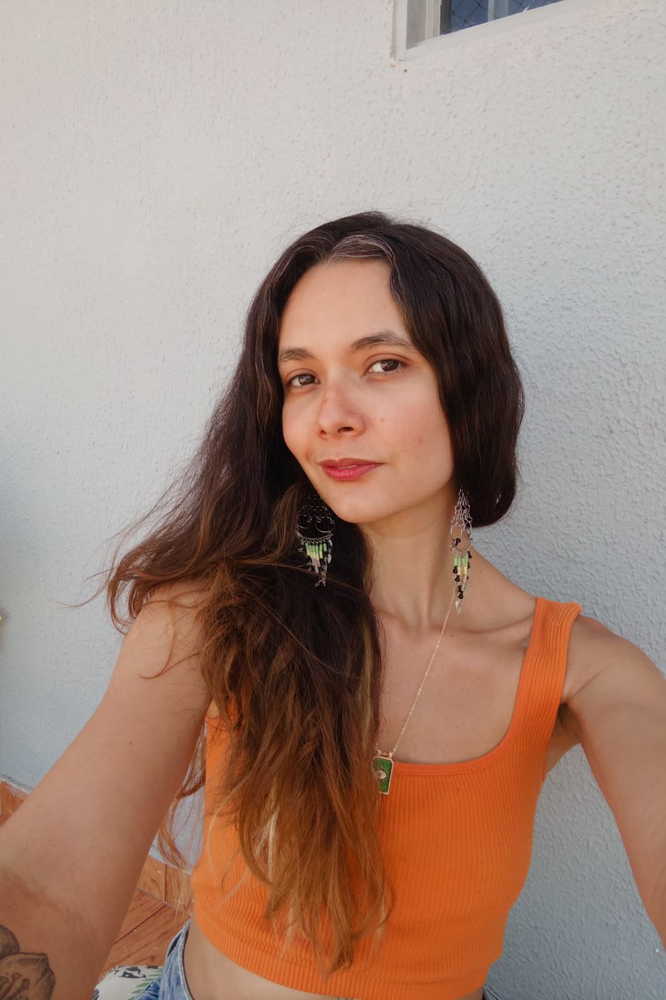
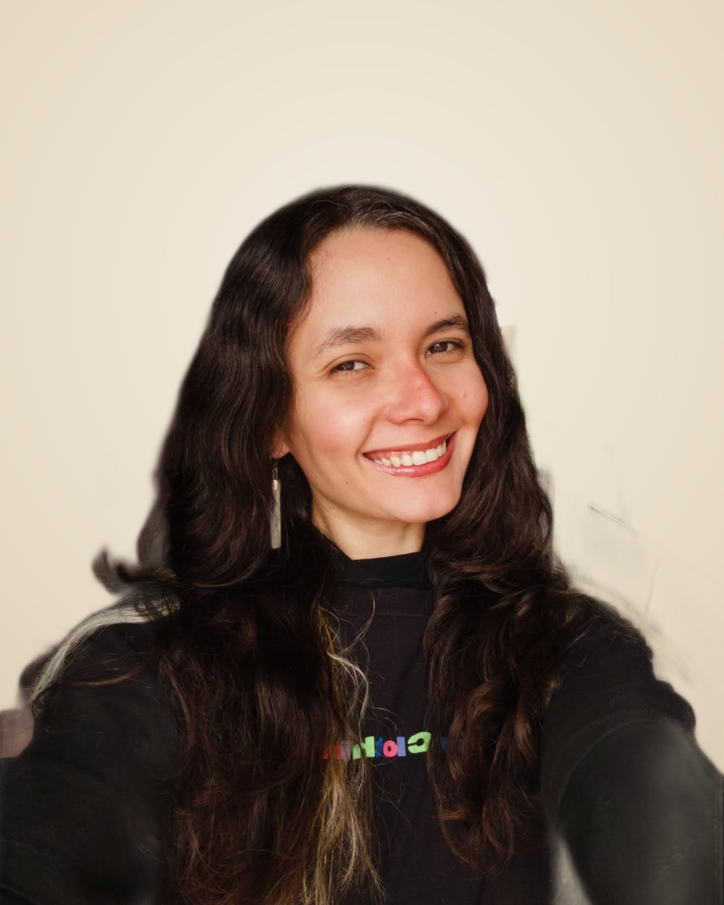
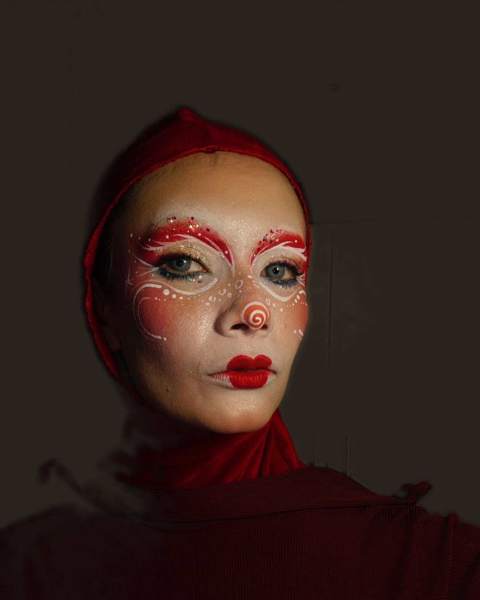
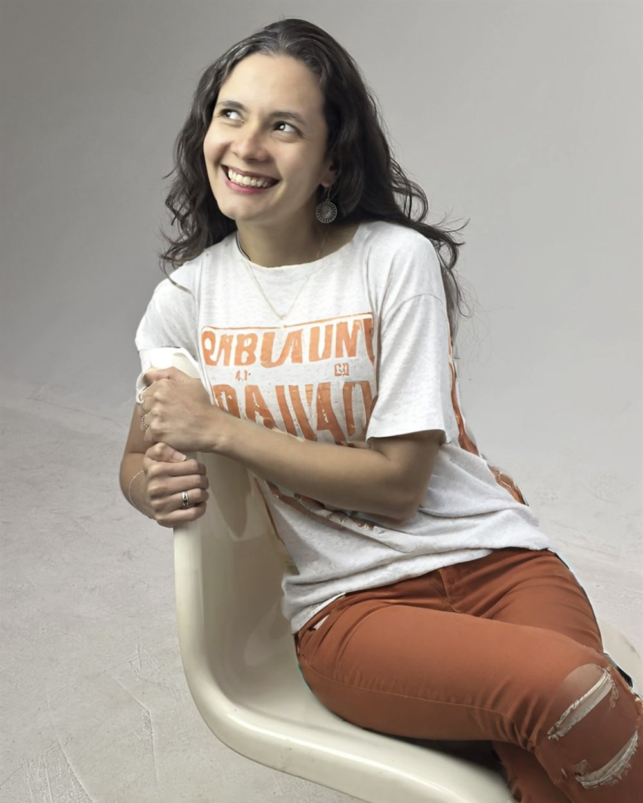

Walquíria Meireles
UGC, criatividade e edição para transformar ideias em conteúdos que se destacam.
- +100vídeos entregues
- +60marcas atendidas
- 5nichos atendidos



Eu sou…
Creator nordestina no DF, atriz e circense. Trago toda essa bagagem cênica para o universo do conteúdo, combinando UGC tradicional, storytelling e edições estratégicas.
Sou especialista em UGC Canvas, aplicando essa metodologia para estruturar vídeos de alto impacto que geram resultados sólidos e consistentes para as marcas.
Com mais de 100 vídeos entregues para +60 marcas (Beleza, Moda, Casa, Pet e Tech), cada produção une interpretação, criatividade e alinhamento estratégico, garantindo segurança do conceito até o resultado final.
Creative skills
- Estilos de conteúdo
- UGC tradicional · Conteúdo com linguagem nativa · Abordagens criativas
- Criação e produção
- Storytelling · Interpretação · Edição criativa · Construção de cenas
- Vertentes de atuação
- UGC · UGC Canvas · Influência · Edição de vídeo
Comigo, você recebe
- Roteiro aprovado antes de gravar, para você ver a ideia no papel primeiro.
- Uma rodada de ajuste inclusa, sem custo extra.
- Entrega em até 72 horas úteis depois da aprovação do roteiro.
Walquíria Meireles
UGC Creator ✦ Brasília
Trabalhos por nicho
Escolha um nicho e veja o que eu já criei por lá.
Vídeos em destaque
UGC Canvas
Uma seleção dos meus trabalhos de UGC Canvas, criados para marcas que querem conteúdo com cara de gente de verdade.
Como eu te ajudo
O que as marcas dizem
Bora criar juntos
Me conta um pouco sobre a sua marca e seu produto! Te respondo rapidinho com uma ideia de roteiro e uma proposta sob medida para o seu projeto.

- Cidade: Brasília, DF
- E-mail: waalmeireles@gmail.com
- WhatsApp: (61) 99121-2653
- Instagram: @euwalmeireles
- TikTok: @euwalmeireles